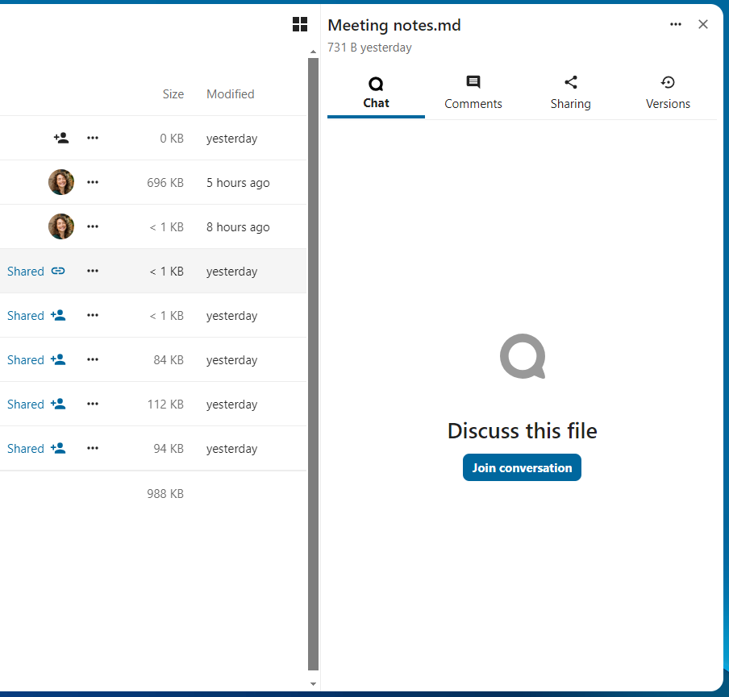
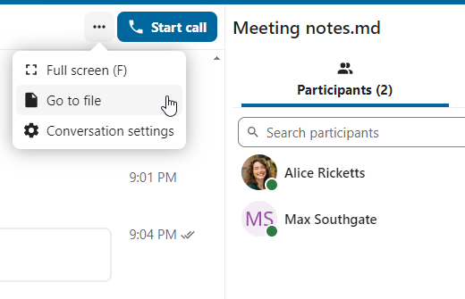
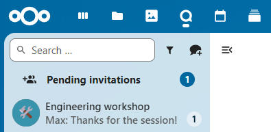

Avanserte Talk-funksjoner
Nextcloud Talk har en rekke avanserte funksjoner som brukere kan finne nyttige.
Matterbridge
Matterbridge-integrasjon i Nextcloud Talk gjør det mulig å lage «broer» mellom Talk-samtaler og samtaler på andre chat-tjenester som MS Teams, Discord, Matrix og andre. Du finner en liste over støttede protokoller ’på Matterbridge github-siden. <https://github.com/42wim/matterbridge#features>`_
En moderator kan legge til en Matterbridge-tilkobling i innstillingene for chat-samtalen.

Hver av broene har sitt eget behov når det gjelder konfigurasjon. Informasjon for de fleste er tilgjengelig på Matterbridge wiki-en og kan nås bak ’’mer informasjon’’-menyen i ’’…’’ menyen. Du kan også ’få tilgang til wiki direkte. <https://github.com/42wim/matterbridge/wiki>`_
Lobby
Lobbyfunksjonen lar deg vise gjestene en venteskjerm til samtalen starter. Dette er ideelt for webinarer med eksterne deltakere, for eksempel.

Du kan velge å la deltakerne bli med i samtalen på et bestemt tidspunkt, eller når du lukker lobbyen manuelt.
Kommandoer
Nextcloud lar brukere utføre handlinger ved hjelp av kommandoer. En kommando ser vanligvis slik ut:
«/wiki flymaskiner»
Administratorer kan konfigurere, aktivere og deaktivere kommandoer. Brukere kan bruke kommandoen «help’’ for å finne ut hvilke kommandoer som er tilgjengelige.
«/help»

Du finner mer informasjon i den ’administrative dokumentasjonen for Talk. <https://nextcloud-talk.readthedocs.io/en/stable/commands/>’_
Talk fra Filer
I Filer-appen kan du chatte om filer i sidefeltet, og til og med ringe mens du redigerer den. Du må først bli med i chatten.
{kind=link}

Du kan deretter chatte eller ha en samtale med andre deltakere, selv når du begynner å redigere filen.

I Talk opprettes en samtale for filen. Du kan chatte derfra, eller gå tilbake til filen ved å bruke ’’…’-menyen øverst til høyre.
{kind=link}
Opprett oppgaver fra chat eller del oppgaver i chatten
Hvis Deck er installert, kan du bruke «…»-menyen i en chatmelding og gjøre meldingen om til en Deck-oppgave.


Fra Deck kan du dele oppgaver i chat-samtaler.

{kind=link}
Grupperom
Grupperom lar deg dele en Nextcloud Talk-samtale i mindre grupper for mer fokuserte diskusjoner. Moderatoren for samtalen kan opprette flere grupperom og tilordne deltakere til hvert rom.
Obs
Breakout rooms are currently not available in conversations that are joinable by guests (public conversations).
Konfigurere grupperom
For å opprette grupperom, må du være moderator i en gruppesamtale. Klikk på toppmenyen og klikk på «Sett opp grupperom».

En dialogboks åpnes der du kan spesifisere antall rom du vil opprette og deltakernes oppgavemetode. Her vil du bli presentert med 3 alternativer:
Tilordne deltakere automatisk: Talk vil automatisk tildele deltakere til rommene.
** Tilordne deltakere manuelt **: Du går gjennom en deltakerredigerer der du kan tilordne deltakere til rom.
Tillat deltakerne å velge: Deltakerne vil selv kunne bli med i grupperom.

Administrer grupperom
Når grupperommene er opprettet, vil du kunne se dem i sidefeltet.

Fra toppteksten i sidefeltet
** Start og stopp grupperom **: dette vil flytte alle brukerne i foreldresamtalen til deres respektive grupperom.
** Kringkast en melding til alle rommene **: dette vil sende en melding til alle rommene samtidig.
** Gjør endringer i de tildelte deltakerne **: Dette åpner deltakerredigereren der du kan endre hvilke deltakere som er tildelt hvilket grupperom. Fra denne dialogboksen er det også mulig å slette grupperommene.

Fra grupperomelementet i sidefeltet kan du også bli med i et bestemt grupperom eller sende en melding til et bestemt rom.

Call recording
The recording feature provides users with an opportunity to:
Start and stop recordings during a call.
Record the video and audio stream of the speaker, as well as screen share.
Access, share and download recorded files for future reference or distribution.
Enabling this feature requires the recording server to be set up by the system administration.
Manage a recording
The moderator of the conversation can start a recording together with a call start or anytime during a call:
Before the call: tick the checkbox «Start recording immediately with the call» in «Media settings», then click on «Start call».
During the call: click on the top-bar menu, then click «Start recording».
{kind=link}
{kind=link}
The recording will start shortly, and you will see a red indicator next to the call time. You can stop the recording at any time while the call is still ongoing by clicking on that indicator and selecting «Stop recording», or by using the same action in the top-bar menu. If you do not manually stop the recording, it will end automatically when the call ends.

After stopping a recording, the server will take some time to prepare and save the recorded file. The moderator, who started the recording, receives a notification when the file is uploaded. From there, it can be shared in the chat.


Recording consent
For compliance reasons with various privacy rights, it is possible to ask participants for consent to be recorded before joining the call. The system administration has the flexibility to utilize this feature in several ways:
Disable consent completely.
Enable mandatory consent system-wide, requiring consent for all conversations.
Allow moderators to configure this option on a conversation level. In such cases, moderators can access the conversation settings to configure this option accordingly:

If recording consent is enabled, every participant, including moderators, will see a highlighted section in the «Media settings» before joining a call. This section informs participants that the call may be recorded. To give explicit consent for recording, participants must check the box. If they do not give consent, they will not be allowed to join the call.

{kind=link}
Federated conversation
With Federation feature, users can create conversations across different federated Talk instances and use Talk features as if they were on a same server.
Important Under current development. Basic chat features are available, more to come in the future!
Feature is required to be set up by the system administration.
Send and accept invites
The moderator of the conversation can send an invite to participant on a different server:

When receiving a notification, user will see a counter of pending invites above the conversations list.
{kind=link}
Upon clicking it, more information will be provided about inviting party, and user can either accept or decline the invitation.

By accepting the invite, conversation will appear in the list as any other one.